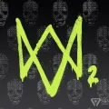

游戏通篇都在用对比手法来让玩家切身感受两阵营的冲突,从而带入角色
罗列4个我认为编剧重点描写的角色
艾丽
正 不顾一切为惨被屠杀的老乔伸张正义,复仇使者
反 屠杀并折磨走投无路的无辜路人(艾比好友)包括孕妇,冷血杀手
艾比
正 善良讲义气有礼貌,被众星捧月的上层阶级小公举(医生女儿)
反 折磨屠杀老乔的大金刚
曼尼
正 幽默风趣,替好友化解矛盾的风流老墨
反 向老乔尸体吐口水的墨西哥帮派成员
汤米
在狙击手关卡,我才成功带入到了艾比视角,尤其是汤米神走位爆头曼尼那一段,我切身感受到了恐惧和愤怒,身心终于能和艾比合而为一,再结合前期塑造的汤米正视角,我陷入了强烈的自我冲突无法自拔,这个狙击手关卡可谓是我认为全剧情的唯一亮点.
由此引发了思考,艾比vs艾丽的两段战斗,全部对调角色,战斗机制改为防御成功则胜利,是否是更好的流程安排?
是否能更好的传达给玩家编剧的想法?
战斗1
经过艾比西雅图章节,对艾比的上下文介绍已经达到目的,玩家无时无刻都在想着完成复仇,只要玩家操作艾丽对战艾比结果确实被反杀,就能完美得承上启下,了结玩家复仇的心愿,又为去圣巴巴埋下伏笔,持续调动玩家游玩积极性.
战斗2
玩家持续保持高昂的复仇情绪,要做个最终了断,却发现被xx的不成人样的艾比.
剧情后玩家操作艾比,让玩家自己切身感受刚才自己的复仇之情,镜头也给给艾比视角被按在水下,看看丑陋的艾丽:D
当艾丽放弃,让玩家切身感死而复生,从而引发更深层次的思考.

我也是认为汤米确实花了大量的心思去设计
首先他让艾莉放弃复仇，然后直接上路 他是绝对不会放弃复仇的 然而他还要安抚艾莉让她放弃
我觉得他内心对于泄露了身份导致乔尔死亡这件事上一直深深自责（但复仇的原因也不光是因为自责）
即使残废了 他也没放弃复仇 所以才来激艾莉
我甚至觉得 他最后也踏上了加州之旅 我在游戏最后关卡一直在寻找是否有汤米的蛛丝马迹

可那个狙击手不是汤米啊
----------------------
好吧，我打的时候真没看出来是汤米，因为回忆里汤米用的半自动，狙击手用的栓动，头发颜色也变深了，找了个视频细看确实是汤米...

我倒觉得艾丽心里的坎儿不是艾比给的，是乔尔给的，艾丽和乔尔的矛盾就是艾丽不明白在穿越大半个美国之后，乔尔却要放弃任务救她，乔尔给的答案是如果再给我一次机会，我还是会这么做，这是事情发生头一天晚上他俩的谈话，然后第二天，艾丽看见乔尔死在眼前，就仿佛乔尔看见艾丽死在手术台上，艾丽决定去西雅图复仇，当在她经历过医院，水族馆，还有恋人怀孕的事情之后，她准备放弃了，同意了汤米他们回去的提议，但是回去之后，乔尔的脸时常浮现，直到汤米带来了艾比的消息，艾丽再次去找艾比，当她把艾比按在水里的时候，她想起那天乔尔的话，如果给我第二次机会的意思，那是怕以后会梦魇缠身，后悔自己当时为什么什么都没能做，至于结局为什么没杀艾比，我个人理解，艾丽理解了乔尔，陷入自责，另外就是她看见了船上的孩子，如果自己杀了艾比，自己就会变成开头的艾比，那个孩子有可能会变成自己，她和艾比一样做不到斩草除根，那就从这里结束吧…就像银魂里冲田总悟说过的:复仇这个东西，到最后谁都不会快乐的

1.编剧犯的极大错误就是将脑内完整剧情和逻辑套入到游戏里仅见过3次面，而其中2面都是互杀亲朋好友造成血海深仇的主角身上，将自己脑内的完整逻辑链和角色的行为逻辑链给混淆了，“游戏通篇都在用对比手法来让玩家切身感受两阵营的冲突,从而带入角色”，玩家切身感受的程度暂且不提，剧院冲突后玩这个游戏基本已经没有代入感了
2.角色的行为逻辑混乱同样也体现在汤米身上，乔尔最开始死的时候汤米可是要自己一个人去复仇不想让艾莉去的，即使最后自己残疾了，也不应该来怂恿已经过了很长安稳日子的艾莉，直接花钱雇个别人不也ok吗
3.至于“深入思考”这种词汇，我觉得多少有些给制作组找补的意味，这有什么值得深入思考的呢？1代本身的剧情也没有多突出多绝世得好，是讲故事、炒菜的功力很好，2代这种复仇原谅的主题电视剧、电影、游戏里又不是没有，甚至多的很，发散一下，更过分的有很多媒体，吹捧立意主题多么多么深刻，以至于闹出世不二出、奇迹这种笑话，这种言论最恶心人的地方也是这些媒体最可恶的地方就在于这些言论透露出十足的傲慢，把玩家当成未开化的二傻子，强迫玩家接受编剧自己的立场。

Gamker刚出的视频把编剧犯的错误讲得挺清楚的。。。汤米这个人物的做法的确也是挺迷的

游戏结束在42章农场就挺好，艾比放了艾莉两回，自己都走的远远了。

是啊 狙击手那一段真的让我惊了，各种走位后，曼尼被一枪爆头 瞬间上头了！

我觉得这作的角色塑造简直不能再拉胯了……
Jesse：工具人，给Dina上了怀孕buff之后就可以送了，总不能任务完成回农庄三人行吧？那就直接死吧。（Dina是犹太人，Jesse实际扮演的就是一个圣灵感孕的角色）
Manny：工具人，给Abby带路之后就可以送了，因为没法和他解释Lev的来历和为什么要船。那就被一枪爆头吧。
Mel：工具人，只是对称一个怀孕buff罢了，挺着大肚子出来冒险的唯一意义是碰上Yara好给她做手术。
Yara：工具人，目的就是带来Lev，同样的，三个人冒险没有张力（因为动作都可以两人完成，三个人的话比如A托B上台子B拽A一把拉上来是很流畅的动作，再拽个C就狗尾续貂了）那怎么解决呢？接到Lev之后就救Abby一命直接写死吧……
Tommy：被Abby打残后总该合情合理的死了吧？缺医少药重伤长途跋涉，这个世界连破伤风都不会得了？没死，因为需要回来给Ellie“发任务”。这根本不符合Tommy之前独自去复仇的逻辑。
Abby和她的朋友们有什么感情交流么？回忆只是和奸夫Owen的互动，其他的朋友flashback时没出现，死了也都没写封信的（给Owen写了在圣芭芭拉的生活，我很想你什么的）。
Jesse死后两个人有什么纪念么？一副画都没有，园子里也没立个碑。
我觉得最大的问题就出在这，大部分角色，出现、行动和死亡完全是为剧情服务。他们是npc，而不是这个游戏里活生生的人。

我认为汤米这条线没有问题，前后铺垫很到位了。汤米和乔尔在一代时分道扬镳，这个在一代时都有交代，原因在于汤米并不认可乔尔在疫情爆发后的为了生存而做出的一些不好的行为，这说明汤米是一个自尊心很强的人。但汤米对乔尔的感情是没有任何疑问的，所以汤米必然会行走西雅图，为乔尔报仇；但西雅图报仇失利，不仅损失了杰西，更是导致自己伤残，这时候报仇已经不仅仅是为了哥哥，更是为了自己。汤米在西雅图三天的行程我们都是通过艾莉和埃比的两条线去间接了解，这是编剧故意留白，给玩家留下想象的空间，但很明显汤米没有艾莉或者埃比的心路历程，因此当西雅图结束后，艾莉放弃了复仇，汤米没有，这才是编剧细心的地方，同时也是为了突出主题，执着于复仇的人，内心只有黑暗。我看汤米的结局，对汤米只有深深的同情。
Gamker的视频我刚刚特地找出来看了，分析得头头是道，看似很有道理，其实很多细节都没有细细咀嚼。就说蒂娜最后离开艾莉这一段，说蒂娜这么做没有人性，这话让我满头问号。先不说在心理上蒂娜对艾莉选择的失望，就说蒂娜自己一个人带着孩子，单身母亲在我们这个时代都面临很多困难，然后在这病毒肆虐的末世，你让蒂娜这个单身母亲一定要等着艾莉，我看这么要求蒂娜才是最没人性吧。
LOU2篇幅很长，编剧很多地方都埋了伏笔，有时候可能只是一句话或者一个动作，不注意看就会漏掉。如果细节都没注意到，就说编剧功力不够，剧情迷什么的，我觉得是站不住脚的。

一代角色塑造全面崩塌，汤米之前还正常，后面怂恿艾丽去复仇还说失望的时候，人设就崩塌了

个人觉得汤米的角色塑造不太行，游戏里也没花太多笔墨刻画汤米的心理变化，最终给我的印象就是人设一直反复横跳，令人费解。上一幕还在阻止艾莉去复仇，下一幕自己就上路了，上一幕说我们得放弃艾比回杰克逊，下一幕却在质问艾莉怎么忘了复仇这事。

汤米因为最后还要复仇从而玩家喜欢，汤米的人气变高，我倒是觉得挺能理解的，但是还是得讲证据和逻辑，汤米前后变化在游戏里缺少表现（即从复仇→准备回杰克逊→再次复仇，实际刺激出这种变化的证据），我觉得不应该因为汤米尾声部分的“快意恩仇”就脑补汤米心理
另外，这个游戏不是大镖客2去干掉迈卡，汤米最后去“说服”已有家业的艾莉去复仇实际上是不大合适的（更别说当初劝艾莉放弃的不就是汤米么），到这一步实际上“说服”这个词已经不太准确，更准确的是“教唆”或者“窜弄”

这游戏最大的败笔就是编剧完全没有按照游戏里人物性格的立场来发展故事剧情。故事剧情完全是编剧一厢情愿，自以为是推动的。游戏里所有人物都是编剧的工具人，没有任何自己的逻辑，思想，感情在里面。就拿汤米说，汤米这么一个性格脾气秉性的人，不想把艾丽置于复仇旋涡的人，为什么剧情最后在世外桃源怂恿艾丽去最后艾比复仇？按照脾气他应该独自去复仇了。
还有在剧院的剧情，艾丽一行人包括汤米，完全像傻子一样没有任何防范措施。被艾比很轻易的潜入，然后逼汤米跪下再把艾丽揍成猪头。
这种细节有很多，编剧存心把艾丽，汤米，老乔降智，来体现艾比的光伟正。

2代和1代相比，npc真的全员工具人，推动完剧情就可以下线了。这游戏画面，声光给满分没有异议。但是尼尔大编剧的破剧情真是恶心死我了。青梅竹马的欧文劝你放弃复仇，劝你和他一起离开，ab不听，一个认识3天的人劝你别杀孕妇就停手了？wtf。汤米也是各种思想左右横跳，你到底是愿不愿意让艾利去复仇。尼尔这nt编剧才不配位，建议赶紧滚蛋。

很多人说这游戏又是发掘了这个人性，又是展现那个黑暗……
也许吧，不过可以确定的是，他们唯独没想明白这是个游戏，是用来玩的，现在玩家们（除了部分升华者）也想带着球棍发掘下自己和编剧的人性。希望最后编剧也能完成自己的升华呢。oh尼尔，您亲爱的老父亲，它的脑花真美，好像隔壁老乔尔家养的狗狗拉的粑粑呢，和您一样呢的臭呢。

楼主总结的挺客观了，反正黑子就会说艾利、汤米做啥都是对的，艾比，狼帮做啥都是错的


 早上刚看的，马上拿来显摆
早上刚看的，马上拿来显摆


 那一战我都惊了，汤米也太牛了
那一战我都惊了，汤米也太牛了

 第二，艾比不知道是谁杀的，剧院里全杀了不就好了吗？已经怒到直接问都不问枪杀一个亚裔，自己这边死一个孕妇一个前男友，一个刚认识没几天的小孩一句话就能阻止你？那所谓最看重火萤小队的逻辑到这怎么不管用了呢
第二，艾比不知道是谁杀的，剧院里全杀了不就好了吗？已经怒到直接问都不问枪杀一个亚裔，自己这边死一个孕妇一个前男友，一个刚认识没几天的小孩一句话就能阻止你？那所谓最看重火萤小队的逻辑到这怎么不管用了呢


 艾比在和曼尼从医院溜出来的时候谈到了欧文的背叛行为，艾比说她嫉妒欧文，因为欧文“比自己先开了枪”。感觉艾比和欧文都对艾萨克的暴力统治积怨已久，脱离WLF已经是早晚的事了。正好有了欧文枪杀队友的契机，还碰到了Lev和雅拉就有了后面的剧情。对于背叛了WLF，朋友死光以后的艾比来说Lev已经是唯一的依靠了，所以在做某些决策上更容易受到Lev的影响。感觉TLOU2剧本确实细节上有一些问题，但是总体来看起码是讲得通的。
艾比在和曼尼从医院溜出来的时候谈到了欧文的背叛行为，艾比说她嫉妒欧文，因为欧文“比自己先开了枪”。感觉艾比和欧文都对艾萨克的暴力统治积怨已久，脱离WLF已经是早晚的事了。正好有了欧文枪杀队友的契机，还碰到了Lev和雅拉就有了后面的剧情。对于背叛了WLF，朋友死光以后的艾比来说Lev已经是唯一的依靠了，所以在做某些决策上更容易受到Lev的影响。感觉TLOU2剧本确实细节上有一些问题，但是总体来看起码是讲得通的。

 俺寻思汤米在西雅图的经历会出在DLC中
俺寻思汤米在西雅图的经历会出在DLC中